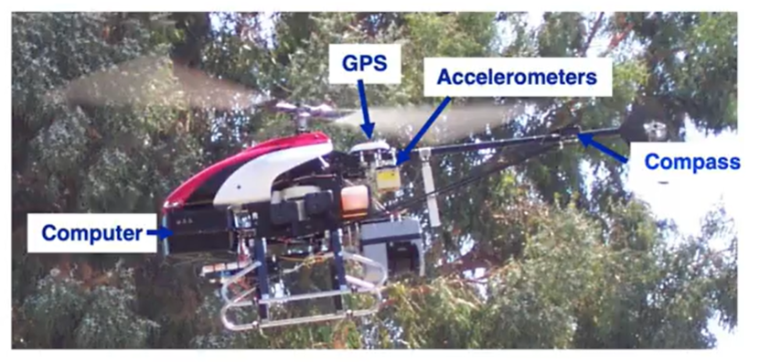

为什么AlphaGo能自学围棋？强化学习基本概念
强化学习简介 什么是强化学习 以直升机控制飞行的程序来举例。 自动驾驶的直升机配备了机载计算机、GPS、加速度计、陀螺仪和磁罗盘，我们可以实时确定的知道直升机的位置。如何使用强化学习来让直升机飞行了？ 在强化学习中，将直升机的位置、方向和速度等称为状态s，因此我们的目标或任务就是
强化学习简介 什么是强化学习 以直升机控制飞行的程序来举例。 自动驾驶的直升机配备了机载计算机、GPS、加速度计、陀螺仪和磁罗盘，我们可以实时确定的知道直升机的位置。如何使用强化学习来让直升机飞行了？ 在强化学习中，将直升机的位置、方向和速度等称为状态s，因此我们的目标或任务就是
概念 WBC（Whole-Body Control，全身控制）是什么？机器人是由“各关节”组成的，其不是“各关节各玩各的”而是一个耦合的整体。在某个时刻可能要做很多事情，比如保持平衡（重心别出圈）、手/脚要动作到目标位置、躯干姿态不能乱、关节不能超限、脚下不能打滑。这些都是一系列
背景 MPC（Model Predictive Control）模型预测控制，是一种控制方法，广泛应用在机器人、无人驾驶、过程控制、能源系统等领域。它的核心思想用一句话来总结：利用系统模型预测未来，并通过优化选择当前最优的控制输入。 如上图是一个MPC应用框图，先来看看框图中的各
什么是插值 插值的核心问题是：在已知两个点的情况下，如何找到它们之间的中间点。 举个人走路的例子，起点在家门口(A点)，终点在公司(B点)，总的路程为1000米，假设人是匀速移动，如果走到一半(t=0.5)，那么人就在家和公司的正中间，如果走到四分之一(t=0.25)，那么离家2
概述 SmolVLA 是一套轻量级视觉-语言-行动（VLA）策略：前端用小型 VLM（视觉 SigLIP + 语言 SmolLM2）做感知与理解；后端用一个“动作专家”专门预测一段连续的低层控制。它与Pi0相比，参数规模少了将近10倍只有约0.45B（450M）。它的目标是在低算
背景 上一篇文章分析了diffusion扩散模型。diffusion扩散模型做法是加噪声、再一步步去噪，训练过程复杂，还需要 carefully 设计噪声调度。 Flow Matching提出了更直接的方式：与其通过一大堆离散的“加噪/去噪”步骤，不如直接学习一个连续的流动 (f
概述 传统机器人策略模型往往局限在单一任务或平台，难以跨场景泛化。与此同时，大规模 视觉-语言模型（VLM） 已展现出卓越的语义理解与任务指令解析能力。如果能将 VLM 的语义理解能力 与 Flow Matching 的连续动作建模能力 结合，有望构建具备泛化与实时性的机器人通用
概述 图像生成是当下研究的热点，diffusion是一种人工智能领域图像生成的基础模型，当下Stable diffusion、DALL·E、MidJourney文生图模型的基座都使用了diffusion。 diffusion扩散模型属于生成式模型，生成图像不是正向从0到1构成图像
VLM与LLM 如果说我们有一张图片、一个图表想让大模型来帮忙理解那应该要怎么实现了？ 标准的LLM语言大模型只能处理文本序列，是不能够读取图像的，如果没有办法将视觉的数据转换为LLM能够理解的形式，那么LLM是无法处理的。需要注意的是我们这里说的LLM并不是transforme
背景 计算机视觉领域，一直都是卷积天下。传统的卷积神经网络(CNN)依赖于卷积核提取局部特征，效果很好，但是也有一些不足，如需要人工设计卷积结构包括卷积核大小和层数，另外就是难以捕捉全局的依赖关系。 transformer最早更多的是应用在NLP领域的架构，用注意力机制来捕捉长距

概述 框架 以翻译作为例子，从宏观角度理解大模型，可以把大模型视为一个黑匣子，它可以输入一种语言然后输出另外一种翻译语言，如下图所示。 如果将模型稍微展开一下，模型分为encoders和decoders两部分。为什么要分为编码器和解码器了？主要是从以下动机考量。 条件生成需求：在
概述 框架 以翻译作为例子，从宏观角度理解大模型，可以把大模型视为一个黑匣子，它可以输入一种语言然后输出另外一种翻译语言，如下图所示。 如果将模型稍微展开一下，模型分为encoders和decoders两部分。为什么要分为编码器和解码器了？主要是从以下动机考量。 条件生成需求：在

基本原理 简单总结一下什么是ACT算法。传统的机器算法过程是观测关节位置J1经过模型预测动作A2然后执行，观测到J2预测数A3，观测到J3遇到A4依次类推，这样就有一个问题，假设预测出的A2跟实际相比偏差就比较大那么对应的观测到的J2就偏离比较大。如果要连续预测K步，就要连续采集

运作原理 自注意力机制要解决的是让机器根据输入序列能根据上下文来理解。举个例子，输入句子为"我有一个苹果手机"，对于机器来说这里的"苹果"应该是指水果还是手机品牌了？所以要解决这个问题，就需要在上下文中去理解，那怎么在上下文中去理解了？那就是由句子中的其他词对于施加权重，让"苹果

模型结构 transform使用了自注意力机制，由编码器和解码器组成。 编码器 transformer的编码器输入一排向量，输出另外一排同样长度的向量。transformer的编码中加入了残差连接和层归一化，其中N X表示重复N此。首先在输入的地方需要加上位置编码，经过自注意力处

YOLOv2 回顾一下YOLOv1有哪些缺陷？ 边界框训练时回归不稳定，导致定位误差大。 每个网格只能预测两个边界框且只能识别一类目标。 小目标检测效果差。 针对以上的问题，YOLOv2进行了改进，下面从检测机制优化、网络结构优化、训练策略优化3个维度进行。 检测机制优化 锚框（

介绍 YOLO在目标视觉检测应用广泛，You Only Look Once的简称。作者期望YOLO能像人一样只需要看一眼就能够立即识别其中的物体、位置及交互关系。能够达到快速、实时检测的效果。 YOLO检测系统可以简要分为3个步骤： Resize image：调整输入图像的大小为